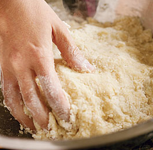

Step 3: Lightly flour a work surface. In a small bowl, mix the flour with the salt. Add the egg to the potatoes and then add the flour mixture. Mix with your hands until the flour is moistened and the dough starts to clump together; the dough will still be a bit crumbly at this point. Gather the dough together and press it against the bottom of the bowl until you have a uniform mass. Transfer it to the floured surface and wash your hands.
